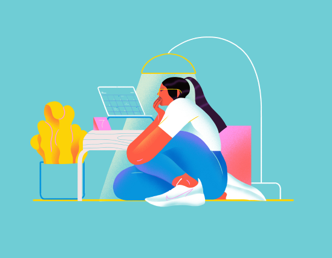

Xoana Herrera

The portfolio of LA-based illustrator Xoana Herrera is an explosion of sumptuous, stylish character scenes dwelling in a world that, frankly, looks ideal. Xoana trained as a graphic designer in Argentina but over time found herself drawn to the world of illustration after a five-year stint at Buck agency. Now, alongside founding a feminist creative collective, Get it Girl, she creates graceful, complex and accessible imagery which would be as at home in an ad campaign as it would be in a children’s book (which she's quite keen to try soon). “As an artist I think it is up to us to keep evolving and taking creative decisions,” she says. “Aiming to be innovative is something I feel I can dare to try every time I take a job, and that’s amazing.”
